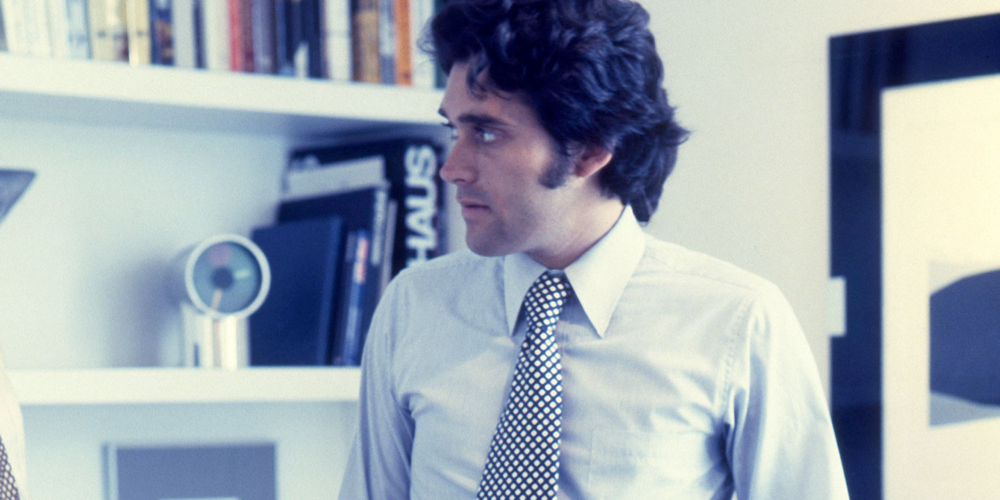

Tenemos 40 y estamos más vivos que nunca
Muchas cosas pueden haber cambiado en los últimos 40 años, excepto la pasión por el diseño que existe en Studio A. Y esa pasión se ve reflejada en el mister president Armando Andrade. Conozco a Armando desde hace 4 años, un décimo de la edad del estudio. Recuerdo que la primera impresión que tuve cuando lo escuché hablar, fue que estaba loco y hasta el día de hoy lo sigo creyendo. Pero no me malinterpreten, él es de esa clase de locos que el mundo necesita, enamorado de las buenas ideas, determinado, pero sobre todo, soñador. Esta es una pequeña conversación que tuvimos en donde hablamos de diseño, arte, cultura y por su puesto del Perú.
Entrevista por Jupio Ishiyama– Primero lo primero ¿Cómo nace Studio A?
Bueno nace cuando yo era muy joven. Creía que el diseño era una disciplina que podía aportar mucho al Perú, había tenido mi primer viaje y ahí me di cuenta de que estaba pasando algo con el diseño, y que estaba aportando no solamente a la vida cotidiana sino también a la ciudad, y me parecía que podía estar implícito en todas las áreas de la sociedad, del mundo… y así es como nace. En aquella época me asocié con César Mendoza, un dibujante muy bueno que tenía las mismas inquietudes que yo.
– Entonces inicialmente fueron ustedes dos.
Sí, pero además hay otra cosa, y que para mi fue absolutamente central en la formación de Studio A. Me di cuenta de que tenías que trabajar con otra gente, que tenías que poder integrar otras disciplinas, y eso ha sido quizás la diferencia más importante en relación a todo lo que en los años 70’s se producía a nivel diseño. Fuimos el primer grupo que reunió gente de diferentes disciplinas para trabajar alrededor del diseño: artistas, antropólogos, sociólogos… gente que tenía otra formación y que de verdad aportaban una visión integral, pero sobre todo, rica y diversa.
– Una tendencia que al día de hoy con el boom del co-working pareciera nueva…
Así es. Formé un estudio, dejé de ser un diseñador individual con nombre propio, para convertirme, en un estudio que pudiera integrar a gente con una perspectiva mucho más amplia de la problemática.
– Cuéntame más sobre la época ¿El branding aún no había nacido o existía, pero sin el término?
El concepto o lo que se entiende como la disciplina del Branding se pone claramente en manifiesto en los años 60’s como producto de la Segunda Guerra Mundial, donde se da todo un proceso en base a la sistematización de símbolos, que nació en Alemania. En Alemania ya venía trabajando sistemáticamente lo que ellos llamaban la entidad corporativa, un conjunto de normas y de reglas que sistematizaban el uso de elementos visuales y su uso coherente, lo cual fue un aprendizaje, y es a partir de ese aprendizaje que la idea de Identidad Corporativa, entiéndase como el manejo de la identidad visual de una marca, se convierte en algo fundamental.
Los primeros manuales de reglamentación aparecen en los años 60’s y es ahí cuando se comienza a pensar en el diseño como un sistema, esto sigue creciendo y perfeccionándose hasta llegar a lo que se conoce como Branding el día de hoy. Posteriormente se plantea la idea de entender a las empresas como entes vivos e independientes, por los cuales hay que poder mirarlas de una manera más integral, y es ahí donde surgen preguntas como ¿para qué vive una corporación? ¿cuál es la personalidad? ¿tiene o no valores una corporación?, ese es el momento donde empezamos a reflexionar sobre el rol de la marca. Y lo que ocurre a continuación es sumamente interesante, pues se desliga el concepto de empresa con el de marca, se convierten en dos cosas absolutamente distintas.
– Claro!!!… la marca adquiere valor y se vuelve uno de los activos más importantes dentro de la empresa
Y lo que ocurre es que a través de los años el poder, el valor de lo tangible vs lo intangible cambia de manera radical, antes lo que era absolutamente relevante era la capacidad fabril que tú tenias, eso evoluciona y se convierte básicamente en que el valor empresarial es la marca y no la instalación fabril. Y esto ocurre porque el mundo comienza a darse cuenta de que hay países que lo pueden hacer igual de bien y más barato, entonces el énfasis migra al valor de la marca. Hay un punto de quiebre en donde el tangible pierde valor y el intangible lo adquiere. Y esto nos lleva a que ese valor intangible debe ser gestionado, hay que poder manejarlo, hay que ordenarlo, hay que ponerlo en los lugares que evidentemente le den vida.
– Además también está la competencia, la gran necesidad de diferenciarse…
Mira, la necesidad de marcar un producto y de diferenciarse, yo creo que es intrínseco a la vida, nosotros tenemos ejemplos como Chan Chan. La idea de marcar los adobes formaba parte de un acercamiento al tema del Branding, o sea dejar una huella que indique que ese adobe había sido producido por alguien especifico.
– Branding precolombino.
Sí claro por supuesto, es un Branding precolombino.
– Llevas más de 40 años en el mundo del arte y del diseño, de hecho has visto muchos cambio y evoluciones ¿Qué es lo que más ha cambiado desde el día que empezaste?
Mira, yo creo que son dos cosas centrales. Inicialmente la disciplina del diseño estaba más enfocado en el producto final, en la visibilización, en la parte visual, Creo que el primer gran cambio fue la importancia que se le dio a la estructura conceptual, eso que está detrás de lo visual. El segundo cambio, que además encuentro fantástico, es la capacidad que tenemos para navegar por el mundo. Hoy día, los requerimientos y la tecnología que tenemos para hacer las cosas que hacíamos 40 años atrás, han hecho que el ritmo de las cosas sean muy aceleradas. Antes todo se hacía manual todo era mucho, mucho más lento y las posibilidades que tenías para ver como quedaba una cosa y como quedaba otra eran eternas. La velocidad de hoy día por ejemplo abre un universo casi sin fin de las posibilidades. Y por último, las herramientas también han cambiado enormemente. Hoy tienes tu máquina como parte fundamental de tu día a día. Antes utilizabas lápices, reglas, compases, borradores, tajadores, colores, sopletes, estabas mucho más cerca al mundo del arte.
– Era más artesanal, que es lo que ahora se valora porque está escaseando.
Lo que ocurre es que, de las cosa de que no han cambiado en 40 años por ejemplo es , la utilización del lápiz y la relación directa que hay entre la idea y el lápiz, esa complicidad. A veces el lápiz te dice cosas que se anticipan a tu cerebro y a veces el cerebro se anticipa a tus manos, yo creo que esa relación entre la mano y la cabeza, sigue siendo un ingrediente absolutamente fundamental.
– ¿Crees que eso se podría a perder en algún momento?
Mira ojala que no, es como la simple pregunta, si es que va desaparecer el libro, que es igualmente dramática, no? Yo dudo que desaparezca por que para mi la mano es casi como la extensión del cerebro.
– Studio A ha ido creciendo junto a las marcas con las que ha trabajado. ¿Cuál crees que es el factor dentro de nuestra ADN que ha sido clave para que estas marcas puedan triunfar?
Mira yo creo que son muchas cosas, la primera es que nosotros trabajamos con milímetros y no con centímetros eso tiene que ser el compromiso de lo que somos. Trabajamos muy profundamente y a detalle en cada cosa y esta metáfora que trabajamos en milímetro y no en centímetros pasa también por nuestra capacidad de análisis. De la capacidad y la determinación que tenemos frente a la problemática que nos toca resolver. Y esa misma pasión por resolver es absolutamente fundamental. Para nosotros un milímetro es una diferencia grande, nosotros somos un buen ejemplo de la pasión que se siente para que un trabajo salga de clase mundial. Continuará…